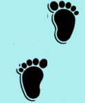

назад к списку
Смешное про детей
В квартире травили тараканов. Маленькая Даша (3.5 года) бежит
и истошно кричит :- Мама мам, там на кухне таракан!
-Большой или маленький? – заинтересованно спрашивает мама.
-Мама он юноша!!!!
***
- Ксения зачем ты разобрала машинку? )
Ксения (5 лет):
-Мне надо было узнать ингридиенты!
***
Купили виноград Жене (2,5 года).
Угостил папу, маму. Говорят:
-А бабушку надо угостить?
-Да ладно, она потом супа поест.
***
Митя (4 года):
« Мама , так президент страны – это вроде директора цирка?»
***
Мама рассказывает Денису (7лет):
-Ты был в-о-о-ттаким маленьким, а стал таки-и-им большим!
-Это время меня таким сделало.
***
Утро. Мама красится.
Егор (4 года) валяется на диване.
Заходит дед:
-Что-то ты дочка, выглядишь не очень, приболела?
Сын в ответ:
-Сейчас докрасится и выздоровеет.
***
Сашка (5 лет) залезает на велик,
щелкает пальчиками по рулю и сидит неподвижно.
Мама: - Саш чего сидишь?
-Жду когда прогреется
***
Сеню (4 года)спрашивают:
-Кем ты хочешь стать, когда вырастешь ?
-Птичкой !
-но почему , Сеня?
-А им можно сземли подбирать и есть.
***
Толя (6 лет):
-Мама, давай купи мне сестрёнку или батика!
-Нет сынок они очень дорогие!
-Да? Но тогда сама роди, это бесплатно.
***
Вася (4 года) :
-Мам, Дай мандарин!
- А волшебное слово?
Он смущенно и вопросительно:
-Абракадабра?!
***
Рома (5 лет) просит бабушку:
-Баб! Я хочу большой барабан ! Купи а?
-Ромочка барабан слишком шумный. Он будет мешать твоему папе работать…
-Я подожду, когда папа ляжет спать, и тогда начну стучать!
***
Дедушка вручил Косте (5 лет) подарок и интересуется:
-А ты хоть любишь меня, внучек?
-Внучек увлеченно шуршит обёртками и кивает:
-Угу.
-А Как? Сильно- пресильно?
Костя отрывается от презента и качает головой:
-Нет , так я маму люблю, а тебя по чуть-чуть.
***
Петя (5лет) смотрит, как мама моет окно
его старым чепчиком.
- Мама , я это носил, когда был девочкой?
***
После ужина Мама зовёт Катю(4 года):
-Давай почистим зубы!
-А куда мы потом с мытыми зубами пойдем?
***
Мама пытается одеть Кирюшу(4 года) на прогулку,
Но мальчик расшалился и мешает.
Не выдержав, мама с раздражением говорит:
-А ну-ка убери свои руки!
-Куда же я их уберу? Они же в меня вставлены!
***
Эвелина(2,5 года) :
-Бабушка , у меня душа болит!
-А как она у тебя болит?
- Икаю!
***
Мама :
- Тебе сосиску или колбасу дать?
Андрей (6 лет) ) :
-Колбаску. Я перелюбил сосиски на колбаску.
А суп я перелюбил на кашу.
А кашу уже на конфетки!
***
Костя (4 года):
- Папа, не хочу мыть руки, ну не хочу- у- у – уу!
- Ребёнок, есть такое слово надо
!
Костя(почти без паузы):
- Папа есть такое слово не надо
!
***
Анфиса (4 года) мечтает:
- Хочу быть пчёлкой!
- А почему?
- Чтобы зимой спать , а летом даром есть…
***
Андрею 2,5 года. Перед праздником мама приготовила
целую миску оливье и стоит над ним загибая пальцы:
- Та-аа-к, колбаску я в салат положила,аартошку нарезала, горошек….
Андрей (тихо-тихо):
-А компотик я туда налил…
***
Диана (5лет) ест котлету.
- Мам эта котлета из коровы?
-Да. Такое мясо называется Говядина
-Ну зачем ты так? Может она и не жадная была!!!
***
Сонечка (6 лет) смотрит телевизор.
Показывают рекламу магазина одежды. .
«А ВЫ где одеваетесь?» - строго спрашивают с экрана. .
«Где-где…В коридоре!!!» - скептически вздыхает сонечка.
***
Мам придя домой с работы говорит:
- Как я сегодня устала…..
Сын-школьник :
- Тебе еще надо помочь мне с уроками.
-Сделай сам.
Младшая дочка назидательно комментирует:
- А ты думала, дети это легко?!!!
***
Даня 4годаУчит жизни собачку:
- Ты, Лада, должна есть много травы, тогда у тебя появится молоко
и ты сможешь завести щенков и их кормить!!!
***
Сын 4 года просит:
- Мама роди мне сестричку!
У меня нет на это времени, я работаю!
- А в субботу родишь?
***
Алису (3 года) забирают из детского сада.
-Мам подпжди. Пойду Косте ручкой помашу…
-Только Косте?!!
- Нет! Диме ещё помашу, он тоже неплохой.
***
Эмма(4 года) :
- Папа нарисуй мне красавицу!
- Ты же сама умеешь.
- Нет не умею. Я как нарисую, то какой-то сторож получается.
назад к списку
Школьники шутят(краткий школьный словарь)
НАЧАЛО УРОКА - Прощай мамочка!
КОНЕЦ УРОКА - Пронесло !
ПАРТА - Доска объявлений.
ОКНО - Мусоропровод.
ОЧЕРЕДЬ В СТОЛОВОЙ - Борба за существование.
СБОР МАКУЛАТУРЫ - Подайте, Христа ради!
ДИРЕКТОР ВХОДИТ В КЛАСС - Встать! Суд идёт!
ДЕЖУРНЫЙ - Мальчик на побегушках.
УЧЕНИК ИЩУЩИЙ НУЖНЫЙ КАБИНЕТ - Блуждающий
рыцарь или Ёжик в тумане
УЧЕНИК НА ПЕРЕМЕНЕ - Всадник без головы
ПОДСКАЗЫВАЮЩИЙ УЧЕНИК - Тайный советник.
УЧЕНИКИ ДАЮЩИЕ СПИСЫВАТЬ - Свои люди
Учитель в классе - УБИЙЦА СРЕДИ НАС
УЧИТЕЛЬНИЦА И СТАРОСТА - Дама с собачкой
ИСКЛЮЧЕНИЕ ИЗ ШКОЛЫ - Путёвка в жизнь.
ДВЕ ДВОЙКИ ПОДРЯД - Удар! Ещё удар!
ДОПОЛНИТЕЛЬНЫЙ ВОПРОС - Выстрел в спину.
СРЫВ УРОКА - Операция «Ы».
ШКОЛА - Безумный мир
УЧЕНИЦА И УЧЕНИК - Кошка с собакой.
ВЫЗОВ РОДИТЕЛЕЙ В ШКОЛУ - Конец света.
РОДИТЕЛЬСКОЕ СОБРАНИЕ - Это не должно повториться!
 прислали Лариса и Наташа
прислали Лариса и Наташа
назад к списку

Вундеркинд
Фантастический фабулеск
Родился удивительный вундеркинд.
Уже в родильном доме он написал жалобу на плохое обслуживание, отказалсяот матери, взял псевдоним и потребовал свободы печати. Пробыл он там неделю, питаясь исключительно жевательной резинкой.
Уходя хлопнул дверью и поселился где-то на чердаке.
Пеленать его приходилось во сне, чтобы не ущемлять самолюбие.
Вундеркинд отрастил бороду и стал похож на Тургенева. Он выпиливал лобзиком буквы, собирал винные пробки и всё требовал таинственной свободы печати.
Наконец ему принесли эту свободу печати в тонком стакане чешского стекла. Вундеркинд выпил и присмирел. Подумав немного, он записался в детский сад, в младшую группу.
Надо же когда-нибудь вливаться в коллектив.